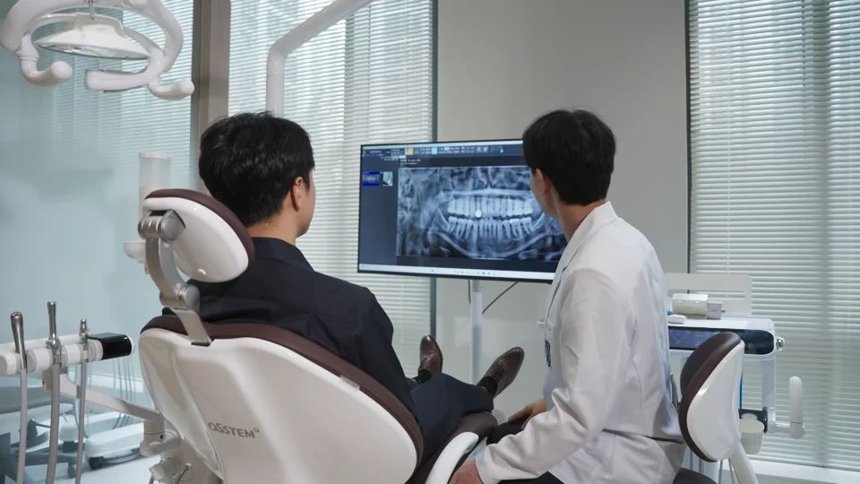

인공치근과 보철물은 역할이 다릅니다
뼈 속의 임플란트가 지지 기반이 되고, 그 위의 연결부와 보철물이 씹는 부분을 구성합니다. 상담에서는 식립 수술만인지, 연결부와 최종 보철까지 포함한 계획인지 구분해 확인하세요.
- 보철물입안에서 보이고 씹는 기능을 맡는 부분
- 연결부인공치근과 보철물을 연결
- 인공치근턱뼈에 놓이는 지지 구조
검사에서 치료 순서와 대안을 정합니다
뼈의 양과 형태, 남은 치아·잇몸의 상태를 확인하고 복용약과 전신질환을 검토합니다. 골이식이나 기존 염증의 치료가 먼저 필요할 수 있으며, 식립과 보철 연결의 간격도 개인마다 다릅니다. 브리지·틀니 등 다른 방법도 함께 비교할 수 있습니다.

치료가 끝난 뒤에도 관리가 이어집니다
임플란트 주변에도 염증이 생길 수 있어 청결 관리와 정기 점검이 필요합니다. 수술에는 출혈·감염·신경 손상 등의 위험이 있고, 뼈와 잘 결합하지 않거나 보철물에 문제가 생길 수도 있습니다. 본인에게 해당하는 위험과 문제 발생 시 대응을 치료 전에 설명받으세요.
빠진 치아를 채우는 방법, 지지 방식이 다릅니다
| 방법 | 무엇이 지지하나요? | 함께 확인할 점 |
|---|---|---|
| 임플란트 | 턱뼈에 놓인 인공치근 | 수술 적합성, 뼈와 잇몸 상태, 유지관리 |
| 치과 브리지 | 주변 치아 등의 지지 구조 | 지지 치아의 처치 범위와 청소 방법 |
| 가철성 틀니 | 잇몸과 남아 있는 치아 등 | 남은 치아 상태, 맞음새와 탈착 관리 |
구조를 비교한 표입니다. 어느 방법이 적합한지는 남은 치아와 구강 상태를 확인해 결정합니다.
상담에서 물어보세요
- 브리지나 틀니와 비교했을 때 제 상태에서의 차이는 무엇인가요?
- 골이식과 임시치아, 최종 보철까지 치료 범위에 포함되나요?
- 집에서 어떤 도구로 관리하고 점검은 어떻게 받나요?
참고한 자료
- Cambridge University Hospitals · Dental implants in restorative dentistry — 임플란트 구성, 적용 판단과 유지관리
- Leeds Teaching Hospitals · Dental implants — 임플란트 치료 계획과 대안
자료 확인일 2026.10.06 · 해외 자료의 비용·보험 제도는 국내에 그대로 적용되지 않습니다. 개인별 진단과 치료 계획은 진료에서 확인하세요.